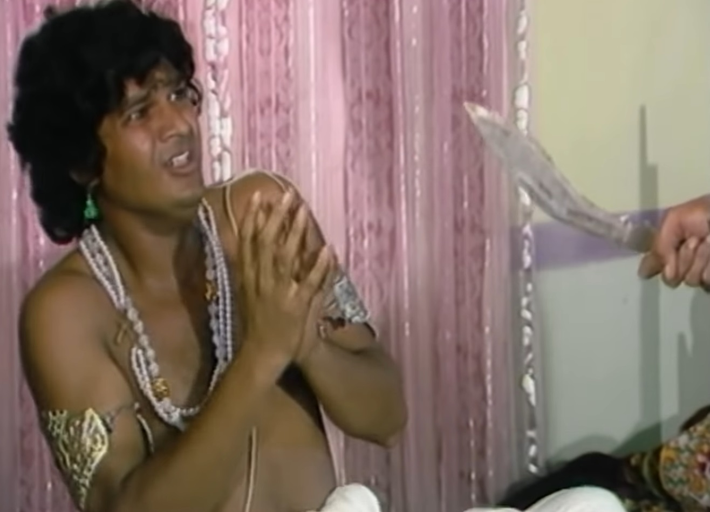
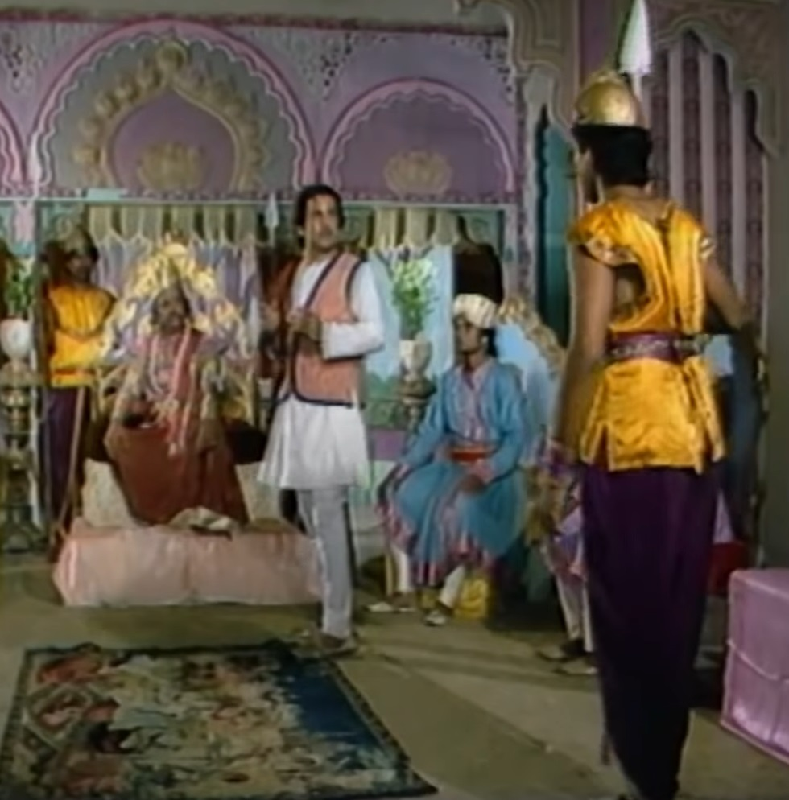
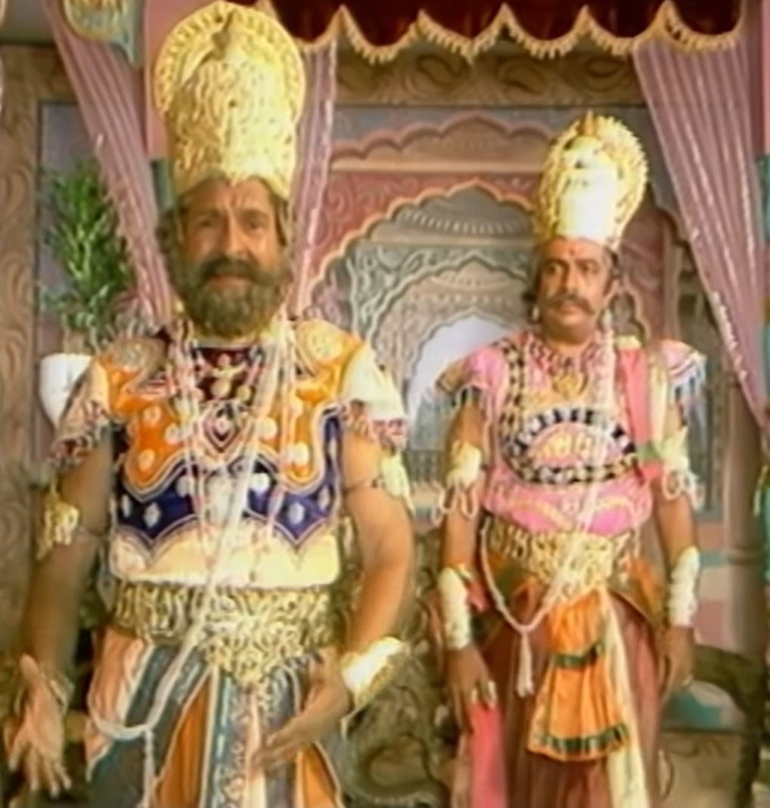

|
Betal listens to Vikram another story in which a poor poet in a city Hari Bhatta lived, one day he used to go to the meeting of King Satyadev and listen to poetry. Hearing which the king is pleased and Princess Priyavanda is pleased with the poet. Starts loving. The princess starts sending letters to Haribhatta and Haribhatt starts getting greedy in his mind that if he gets married to the princess then He will be able to live in the palace. Hari Bhatt, take care of all the letters of the princess. Started keeping. The love between the princess and the poet deepens. one day king His enemy Dharma Dev comes to Satyadev and enmity with the king. Asks for Priyavanda's hand for his son Indrajeet to end the King Satyadev takes friendship with King Dharamdev after seeing the welfare of the people. He does so and says yes to the marriage. |
 |
Hearing this news the princess comes to her father and tells him that She loves someone else, he has a relationship with her without asking her. Why did he do it? The king thinks that my daughter has told him about his people. He thought first about his daughter's welfare and then about his daughter's welfare. He requests his daughter to sacrifice her love for her people. The princess obeys her father and goes to meet the poet Haribhatta. She sends her maid to meet both of them in the temple at night. Let's come. |
|  |
There was a thief in the same city whose name was Kaliya. He had a lot of money in his kingdom. There was panic, even the king was upset with it. That thief went to the temple the same day Was sitting when the princess and the poet were about to meet. Seeing the princess coming, he The thief hides in the temple. Rajkumari tells everything to Hari Bhatt That she will have to give up her love because her relationship has been broken by her father. Rajkumar has decided with Indrajit and if that relationship breaks then There can be a war between the two states which will have very bad consequences. Poet Haribhatta listens to the princess and tells her that he will agree to her request. If she gives him all her jewelery then if she does not do so then he Will send all the letters written by her to her future husband. princess poet's She is saddened to hear this and accepts his words. |
 |
The thief was listening to all this secretly. Haribhatta's mission to help the thief princess Goes home and asks for all the letters from him and a fight starts between them. And Kaliya kills the poet and takes all the letters from there to the temple where The princess was already ready with all the jewellery. kaliya thief princess When he tells that he is a thief, the princess gets scared. Kaliya the thief tells them that you are Don't be afraid, he has come here not as a thief but as their subject and everyone from Hari Bhatta He has come with the letter to deliver it to them. Kaliya tells the princess that Hari Bhatta also Not left alive. Just then soldiers come there to hide Princess Kalia. He asks for it and the soldiers catch him and take him away. princess back Returns to the palace. He was worried about Kaliya thief, so he went to King Satyadev. She goes closer and tells everything. The next day Kaliya brought the thief before the king. goes. Betal stops after telling such a story and asks King Vikram Now tell me what will King Satyadev do with the Kaliya thief, will he punish him or Will forgive. Vikram answers Betal's question that the king is performing his duties. will give death penalty to the thief in order to fulfill the The people have to think and the thief had committed many murders and thefts which were not forgiven. She could go and he could not forgive her to save his daughter's honour. Therefore the king will give him death penalty. Hearing this, Betal tells Vikram that you Justice has been done well but you have forgotten my condition that if you speak then I will leave. I will go and you said, so the betel fly again flies and hangs on its tree. goes.